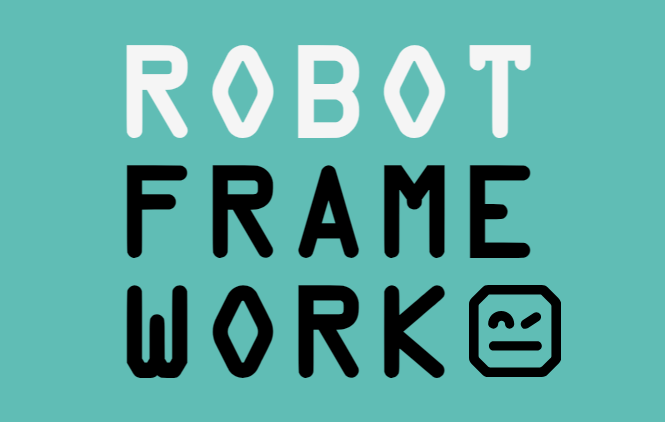
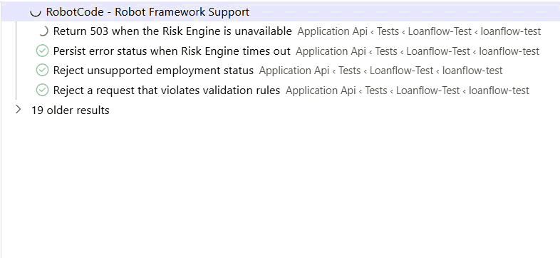
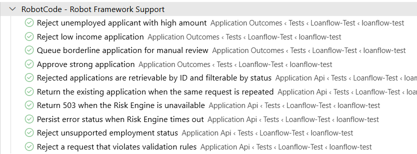
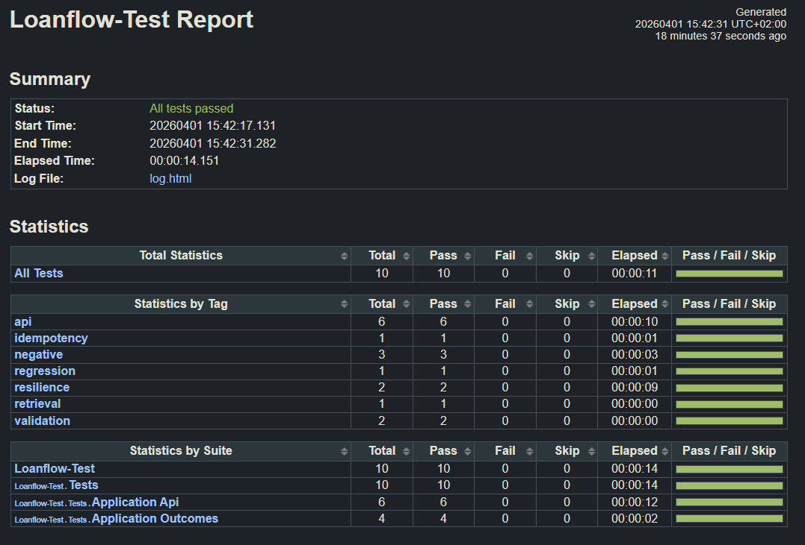

Robot Framework
Testing Without a Dedicated QA Team
Team Knowledge-Sharing Session
No dedicated QA team? No Problem! This session shows how Robot Framework allows developers to own automated testing — from readable test cases to CI enforcement — without needing a specialist.

Manual regression testing on every sprint 👇

Let the robots handle it. So your team can focus on what really matters.
Why Robot Framework?
- Tests written in keyword-driven, human-readable syntax — plain language, not scripts
- Different steps like
Post ApplicationorResponse Status Should Beare maped to Python keywords under the hood - No test-tool expertise needed to read results — anyone in the team can follow along
- Produces clear HTML reports & logs after every run
- Easy to maintain and reuse across acceptance, integration and regression suites

Why Robot Framework? — in code
*** Test Cases *** NAME INCOME AMOUNT EMPLOYMENT STATUS
Approve strong application Approve Case 90000 20000 employed approved
Queue borderline for manual review Review Case 60000 20000 employed pending
Reject low income application Low Score Case 30000 20000 employed rejected
Reject unemployed applicant with high amount Unemployed Case 50000 15000 unemployed rejected
Test names are the requirements. Add a new scenario by adding a row — no new code.
How I Decomposed the Problem
Starting from the API spec, I asked: where can this go wrong?
| Risk Area | What I tested | Scenarios | Tag |
|---|---|---|---|
| Decision logic | approve / pending / reject (income & employment) | 4 | regression |
| Input validation | incorrect loan amount, unsupported employment status | 2 | validation |
| Resilience | Risk Engine timeout, Risk Engine unavailable | 2 | resilience |
| API contract | idempotency, retrieval by ID, status filtering | 2 | smoke |
Each row is a different failure mode, not just a different input value — that's risk-based thinking.
How Robot Framework Tests Work
- Tests are grouped into test suites and backed by keyword libraries
- The engine runs each test step by step, compares actual vs. expected results
- Generates
log.htmlandreport.htmlfor quick analysis after every run - Syntax is close to natural language — developers, POs, BAs and managers can read it
This is a big advantage for all participants of the process.
# resources/api.resource
*** Settings ***
Library RequestsLibrary
Library ../libraries/LoanFlowLibrary.py
*** Keywords ***
Start Test Environment
${base_url}= Start Loanflow Api
Set Suite Variable ${BASE_URL} ${base_url}
Create Session loanflow ${base_url}
Post Application
[Arguments] ${payload}
${response}= POST On Session
... loanflow /api/v1/applications
... json=${payload} expected_status=anything
RETURN ${response}
Response Status Should Be
[Arguments] ${response} ${expected}
Should Be Equal As Integers
... ${response.status_code} ${expected}
How Developers Can Contribute
Even without a dedicated QA team:
- Write & refine keywords and libraries — high-level tests stay readable, low-level logic stays robust and reusable
- Implement acceptance & integration tests from user stories, shifting QA work into the development workflow (impacts DoR & US process)
- Own CI/CD failures — investigate Robot failures, fix bugs and improve test stability in place
The team collectively owns both building features and proving they work.
loanflow-test/
├── tests/
│ ├── application_outcomes.robot ← test suites
│ └── application_api.robot
├── resources/
│ ├── api.resource ← Robot keywords
│ └── variables.py
├── libraries/
│ └── LoanFlowLibrary.py ← Python bridge
│ (developers own this)
└── src/
├── loanflow_mock/
│ ├── app.py ← API under test
│ └── state.py
└── risk_engine_mock/
└── app.py ← mock service
Best Practices
Good Robot tests are clear, independent, and easy to maintain.
- 1. One test, one thing — verify a single behavior; too long? split it
- 2. Descriptive names —
Reject Low Income Application>Test01; applies to keywords & variables too - 3. Domain-language keywords —
Post Application— declarative, ≤ 10 steps; live in resource files - 4. Independent tests + setup/teardown — run in any order; use teardown for shared preconditions (DB reset, session)
- 5. Tags & suite docs — smoke regression api — run subsets; add
Documentationto suites to explain coverage - 6. Data-driven tests — same logic across multiple inputs
- 7. Follow the pyramid — more unit/API, fewer E2E; Robot for acceptance & integration flows, complex logic in Python libs

Example Test Case
Reject a request that violates
validation rules
[Tags] negative validation api
${payload}= Build Application Payload
... applicant_name=Validation Case
... annual_income=45000
... requested_amount=${MIN_LOAN_AMOUNT - 1}
... employment_status=employed
${response}= Post Application ${payload}
Response Status Should Be ${response} 400
${body}= Response Json ${response}
Dictionary Should Contain Item
... ${body} error_code VALIDATION_ERROR
[Tags]— negative validation api — runnable as a subsetBuild Application Payload/Post Application— reusable keywords fromapi.resource${MIN_LOAN_AMOUNT - 1}— variables keep tests data-drivenResponse Status Should Be 400— reads like the acceptance criterion

Why Not Just Test Manually?

Why Not Just Test Manually?
- Repeatability — a human runs checks differently each time; a script runs them identically every build
- Speed — the full suite runs in CI in minutes; manual regression across 20+ scenarios takes hours
- No regression drift — automated tests catch breakage in old features the moment new code lands
- Living documentation — test names like Reject unemployed applicant with high amount describe the rules without a separate spec document
Manual testing still has a place — exploratory, UX, edge cases. Automation covers the boring repetitive part.
# tests/application_outcomes.robot
*** Settings ***
Test Template Application Decision Should Be
*** Test Cases ***
... NAME INCOME AMOUNT STATUS
Approve strong application Approve 90000 20000 approved
Queue borderline for review Review 60000 20000 pending
Reject low income Low Score 30000 20000 rejected
Reject unemployed high amt Unemployed 50000 15000 rejected
# one template keyword → four independent tests
# add a new scenario: add one row, zero new code
Mocking Strategy

Mocking Strategy
- The problem — the Risk Engine is an external service; tests can't rely on it
- The solution — a lightweight fake Risk Engine spun up per suite (
Start Test Environment/Stop Test Environment) - What it enables — tests for timeout (
Configure Risk Engine Delay 6), unavailability (Stop Risk Engine), and happy paths — all deterministic - "What if the mock doesn't match production?" — the mock is kept minimal and contract-based; any drift shows up in integration testing against the real service
Mocks make edge cases testable. Without them, a 503 scenario requires deliberately breaking production.
# src/risk_engine_mock/app.py
@app.post("/configure")
async def configure(body: dict):
app.state.delay = float(body.get("delay", 0))
return {"status": "ok"}
@app.post("/score")
async def score(request: ScoreRequest):
if app.state.delay > 0:
await sleep(app.state.delay) # simulate timeout
ratio = (request.annual_income
/ request.requested_amount)
if ratio >= 4.0:
return ScoreResponse(score=82) # → approved
if ratio >= 2.0:
return ScoreResponse(score=55) # → pending
return ScoreResponse(score=18) # → rejected
CI / CD Integration
- Tests run on every push — triggered automatically; no manual step needed
- Tag-based subsets — PR pipelines run smoke only; nightly runs the full regression suite
- Failure = blocked merge — a failing Robot test stops the PR, same as a failing unit test
- Artefacts published — anyone can open
report.htmland inspect what failed and why
Quality is enforced in the pipeline — not in a separate QA phase at the end of the sprint.
⚡ "This looks like overhead." Setup: ~1 day for a keyword library. Each new story: minutes. The first regression you catch in CI — not in production — pays that back.

Summary
Robot Framework gives you
- Human-readable tests
- Reusable keyword libraries
- Clear HTML reports
- Easy CI/CD integration
Your team gains
- Shared ownership of quality
- Tests as living documentation
- Faster feedback loops
- Less dependency on QA specialists
Start small — one keyword library, one acceptance test per user story.
If I had more time:
contract tests to validate the mock against the real Risk Engine ·
mutation testing to verify scenarios catch real bugs ·
performance benchmarks on timeout handling against SLA
Thank you!
😃